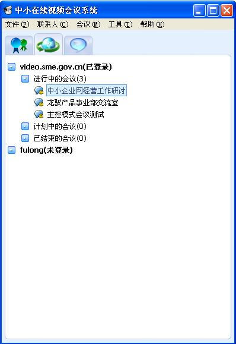
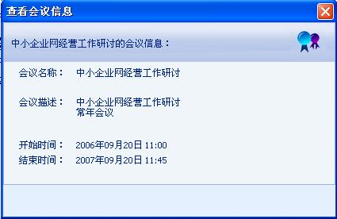

加入会议
加入会议
只能加入进行中的会议。双击“进行中的会议”下面的会议项；或在选中的会议点右键，在弹出的菜单中选“加入会议”；或点击“会议”菜单选“加入会议”进入当前选中的会议。

图1 加入会议
 退出会议
退出会议
在选中的会议点右键，在弹出的菜单中选“退出会议”；或点击“会议”菜单选“退出会议”退出当前选中的会议。
 查看会议信息
查看会议信息
在选中的会议点右键，在弹出的菜单中选“查看会议信息”；或点击“会议”菜单选“查看会议信息”查看当前选中的会议信息。

图2 查看会议信息